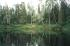
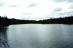

| р. Олова, дождь. Именно под этим дождем мы и стапелились. Промочили все, что только смогли, пока таскали вещи, но, зато, кадр получился отменный. |
| р. Олова. В этом месте этот ручей приобретает хоть какую-то ширину, а до этого сплошные кусты. |
| р. Олова. Количество кувшинок поражает... |
| р. Илекса. После того, как из узкого Олов-ручья открывается этакий простор... В общем, словами это не передать. |
| р. Илекса. Егеря на протяжении всего маршрута устраивают стоянки для туристов. Встать, кстати, кроме как на них, больше негде. |
| р. Илекса. Та же стоянка (вроде), но изнутри. Болото, комары... |
|  | р. Илекса. Это место после первых перекатов. Вообще, Илекса сложностью не отличается: в верховьях перекаты, и разве что внизу есть несколько порогов. Правда, все зависит от уровня воды --- в июле, кстати, вода уже спадает и эти пороги превращаются в шкуродеры. |
| р. Илекса. Перед заросшим озером. Множество проток, дальше сплошные заросли. Несмотря на то, что во многих отчетах здесь гарантировалось заблудиться, мы прошли здесь достаточно быстро. Правда, одну блесну все-таки потеряли ;( |
| р. Илекса. Хотя, где это находится, совершенно без разницы. |
| р. Илекса. Самая шикарная стоянка на всей реке. Место на высоком берегу, на повороте реки, слева, в метрах ста, находится озеро... Красота, ветерок и вообще: мы тут стояли целый день. Для двух человек достаточно, что бы взвыть от тоски... |
| р. Илекса. Если приглядеться, то можно заметить уток. |
| р. Илекса. Берег. |
| р. Илекса. Мне редко кто верит (смотря на распечатку A4 фотографии), что это фотография. А тем более, что это летняя фотография. |
 | р. Илекса. Ночь. Туман. |
| Маленькое озерцо рядом с Лузским озером. Справа --- егерь Миша, он живет на кордоне со своей семьей. Очень советую: не пробегать Лузское озеро сразу, а сделать крюк и зайти на кордон, познакомиться. Не пожалеете. |
| р. Илекса. Первый отнсительно серьезный порог. Воды мало, поэтому первые его перекаты приходится заниматься проводкой. Оч-ч-чень интересное занятие... |
| Там же. |
| И еще раз там же. |
| После порогов. |
| р. Илекса. Калакундинский порог ночью. |
| р. Илекса, бывш. деревня Калакунда, сразу после порога. Уже утро. |
| р. Илекса. Семейный портрет... |
| р. Илекса, Калакунда. В общем-то, на этом месте все пороги и заканчиваются. |
 | р. Илекса. Радуга. |
|  | р. Илекса. Внизу ее ширина становится просто неприличной. |
| р. Илекса. Сосна. |
| р. Илекса. |
| р. Илекса, предпоследняя стоянка на реке. |
| Там же, час спустя. |
| Там же, но с утра ;) |
| Водлозеро. Самое большое озеро в Карелии. Впечатляет? А каково плыть по нему? Мы встретили несколько групп туристов в этом году, но пересекали его пошли только мы, остальные договаривались с катерами. |
| Водлозеро. |
| Водлозеро. Небо... |
| Водлозеро, вид на Ильинский погост. В этом году мы не стали на него заходить. На этом острове, кроме того, что можно посмотреть на "гнилушку", можно набрать грибов и малины. |
| Водлозеро. |
| Водлозеро. |
| Водлозеро. Закат. |
| Водлозеро. Закат. |
| Петразаводск. Мы так решили, что пройти через город с нашим снаряжением (байдарка, рюкзак и "ридикюль" --- парашютная сумка) мы сможем запросто. Это действительно так, но на нас странно реагировали ;) особенно испугалась кондукторша в троллейбусе. |